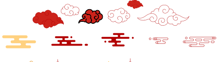
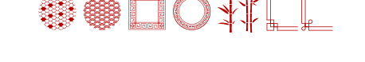
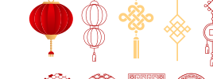

Análisis de marca · todavía NO aplicado
Recursos gráficos del branding viejo
frente a la marca DTD v4.3
Revisé la lámina de "Recursos Gráficos" del manual viejo (Doortudoor). Son motivos de cultura china pensados para acompañar las piezas. Acá está, familia por familia: qué es, si ya lo tenemos en el sistema actual, y qué conviene hacer hacia nuestra marca — sin aplicar nada todavía.

Fuente · "Doortudoor / Identidad visual de la marca" — lámina Recursos Gráficos (branding anterior)
1
Ya está en el sistema
(meandro 回纹)
(meandro 回纹)
2
Parcial — tenemos algo equivalente
3
Nuevos · buenos candidatos a sumar
2
A evitar como sistema (cliché / fuera de paleta)
Familia por familia



🛑 BRAND-CHECK · el tema es el COLOR, no los motivos
| Lo que pediste | Sumar los recursos gráficos chinos del manual viejo a la marca nueva. |
| Dónde choca | El set viejo está en rojo brillante (~#D8221A) y dorado (~#E7B23C). Ninguno está en la paleta v4.3 — rompe la regla "solo tokens" y, en linternas/nudos, el tono cliché va contra "cero AI-slop". |
| Por qué importa | Adoptar los motivos en su color original se vería como souvenir genérico y rompe la sobriedad navy/wine/paper que define la marca. |
| Alternativa que respeta | Adoptar solo la geometría (meandro [ya], olas, nube line-art) recoloreada a wine #7F0F1A / navy #0F1E3D / wine-soft, mono-color, fina y de apoyo. Cero rojo neón, cero dorado. |
Recomendación · "set de apoyo gráfico DTD"
Qué sumaría (si lo aprobás)
Un set chico y disciplinado de motivos geométricos, todos en la paleta y mono-color, que conviven con el meandro sin gritar. La cultura china entra "de manera sutil", igual que decía el manual viejo — pero ahora en nuestro idioma de color.
- 01Meandro 回纹 — ya es el motivo de cabecera. Se queda como está.
- 02Olas 海水江崖 — nuevo, como cenefa inferior / pie de pieza, recoloreada wine o cream tono sobre tono.
- 03Nube 祥云 line-art — nueva, solo versión fina mono-línea, como acento de esquina o separador.
- 04Regla de color única: todo el set en wine
#7F0F1A/ navy / wine-soft. Nunca el rojo brillante ni el dorado del original. - 05Fuera del set: linternas, nudos, bambú y roundels de celosía — cliché o aporte bajo. A lo sumo, pieza festiva puntual.
Decime si te gusta esta dirección y lo siguiente sería dibujar los 2 motivos nuevos (olas + nube) ya recoloreados, como SVG tile listos para el sistema — y recién ahí actualizar el Brand Book.
DTD Cargo · análisis interno de marca · junio 2026 · documento de trabajo — no aplicado al sistema